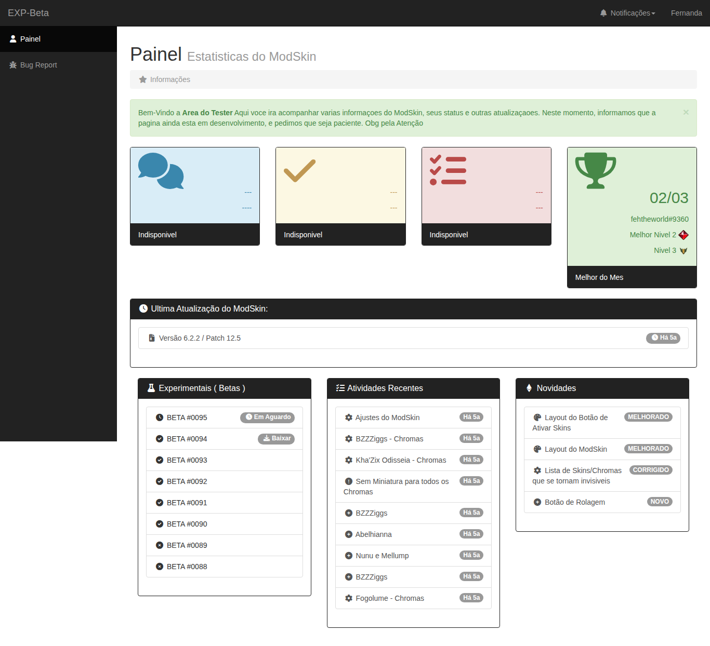
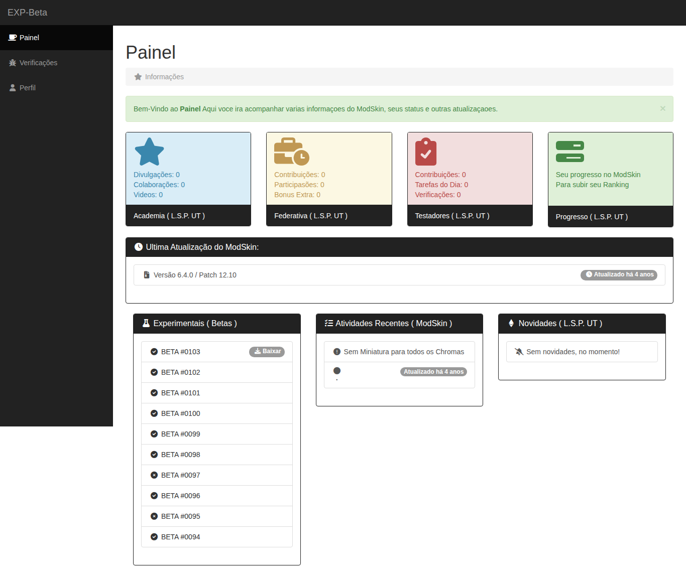
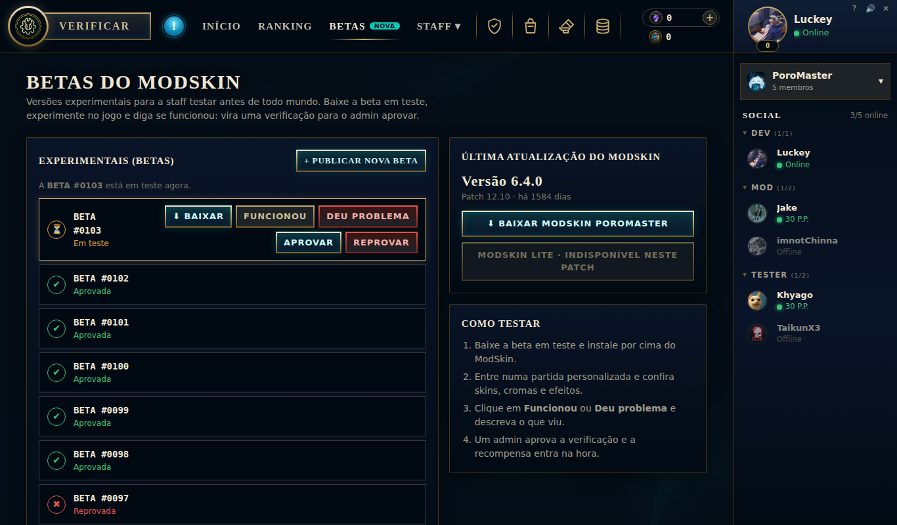

2020
O começo
29/12/2020 · Luckey cria a L.S.P. UT. A staff se organiza no Discord, com os primeiros testers e a Federativa.
Sem painel ainda: tudo acontecia no servidor do Discord.
2022
Painel do Tester
- Site
modskinbr/L.S.P.-UT, com 1.210 commits no ano - 9 perfis: Porito, Gece, Kawai Foxy, Mono, Fehtheworld, Krap, Trick, Buddha e JasonMiler
- Pontos, Nível, Sequência, Rank Mítico, Imunidade e Rebaixamento
- EXP-Beta, Bug Report, Bate-papo da staff e o "Melhor do Mês"

2023
Painel PoroMaster
- Repositório
PoroMaster/pt_BR, janeiro de 2023 - 5 perfis: Luckey, Jake, imnotChinna, Khyago e TaikunX3
- Reputação por P.P. a partir de 30, Maestrias, Pontos Míticos, Destaque e Imunidade
- Academia, Federativa, Testadores e Progresso

2026
O remaster
- Visual do cliente do LoL, tela de carregamento e painel Social
- Os 5 perfis de 2023 começando do zero
- Betas, verificações, reputação com demissão em 0 P.P.
- Baú Hextech, Forja, Coleção e editor de perfil: o que o painel poderia ter sido

Peças de museu: as senhas originais foram removidas e o login virou "entrar como". Imagens que vinham do Discord foram salvas localmente; o chat ao vivo (RumbleTalk) e alguns serviços externos não existem mais e aparecem vazios. Nada aqui é oficial da Riot Games.